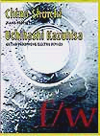
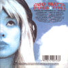
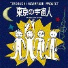
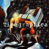
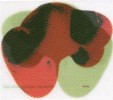
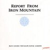
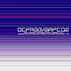
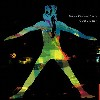
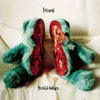

strange music page
japanese strange music * * * Ta - To
- 大植村計画
- 大山脈X
- 大陸男対山脈女
- 高橋鮎生
- 高橋鮎生+太田裕美
- 千野秀一/内橋和久
- 千葉節子
- CIBO MATTO
- ちゃくら
- Che-Shizu
- 土屋昌巳
- 坪内昌恭PROJECT
- Tipographica
- DATE COURSE PENTAGON ROYAL GARDEN
- Demi Semi Quaver
- 天鼓
- Tokyo Zawinul Bach
- 東京中低域
- 戸川純
- 戸田誠司
- 突然段ボール
- トリコミ
#植村昌弘と高良久美子のデュオ、
P.O.N.を思わせるような変拍子を組み合わせたような感じの演奏が沢山です。カセットテープで、P.O.N.のライヴの時に買いました。
即興が何本か入ってるだけかと思ったんですけど、結構編集されたよーなトラックも有ったりして (植村+高良好きとしては)結構気に入ってます。
A track:
- 妙計
- 百計
- 良計
- 早計
- 奇計
- 密計
- 大計
B track:
- 総計
- 植村昌弘 (percussions,synthesizer,marimba)
- 高良久美子 (percussions,marimba)
#これも神戸のXEBECにて、CD-Rです。1997.8.10のライヴ録音です。
舐めきった曲名ですけど、演奏の方はカッチョイイです。丁度この
下の大陸男対山脈女と高円寺百景を足したような音かな?
ベースは裸のラリーズ(だったよね?)の高橋ヨーカイと元高円寺百景の原田仁。楽器編成からして気合がはいってはいって入ってます。
単純に上の2つ好きなら買いだと思います。三橋美香子も気合入ってます。(2000.11.19)
- 組曲大山脈
- アトラス山脈
- アルプス山脈
- ピレネー山脈
- アルタイ山脈
- バルカン山脈
- アラビア高原
- 西カーツ山脈
- アンデス山脈
- ロッキー山脈
- ヒマラヤ山脈
- 吉田達也 (drums,voice,keyboards)
- 高橋妖怪 (bass)
- 原田仁 (bass)
- 勝井祐二 (violin)
- 三橋美香子 (vocals)
磨崖仏: MGR-02
#吉田達也さんが珍しくbassを弾いてます、基本的にはハードコア系なのですが結構複雑な展開とかがある曲も有って面白いです。
- 大陸のテーマ
- PERFECT HELL
- SPAIN
- 手強いキヨスク
- こすれた月影
- TAKION
- SPACE LYNCH
- お前の脳は借り物
- HODEN GIRLS
- KING OF CAFFEINE
- PLANARIA
- 大陸のテーマ
- 吉田達也 (bass,drums,vocals)
- 勝井祐二 (violin)
- 佐藤 Hal (guitars)
- 西森潤 (keyboards)
- 城戸弘二 (drums)
- 津山篤 (vocals)
- 鰐好吾郎 (sax,vocals)
- 灰野敬二 (vocals on 7.)
- 古舘徹夫 (vocals on 2.)
- 北村昌士 (vocals on 2.)
SSE COMUNICATIONS: SSE-4034CD (1994)
#現
P-model,4Dの小西健司と
After Dinnerや
Kennedyの泉陸奥彦のデュオ、Tangerine Dreamとかの様な印象を受けます。でも、正直このアルバム自体はそんなに面白くないです、この二人のその後の活動はとても面白いんですけど。
- Perpetual Motion
- stainless mama
- America
- 飛行船 Part3 (flying ship part 3)
- A.T.B.
- ジロ君のお誕生日会 (Jiro's birthday party)
- アルルの太陽 (le soleil d'arles)
- 泉陸奥彦 (synthesizers,guitars,violins,noises)
- 小西健司 (synthesizers,guitars,noises)
KING RECORDS/NEXUS: KICS-2506 (1980)
#ヤフーオークションにて。
- City in the sky
- 夏の終わりに
- 光の中へ
- 月の庭
- 水色の鏡
- 不思議な夜
- ながれる
- こもりうた
- 賛歌
- ことばのあいだに
- 高橋鮎生 (guitars,bass,keyboards,vocals)
- 近藤達郎 (keyboards on 1.7.)
- 西村卓也 (bass on 1.2.6.9.)
- 鈴木さえ子 (drums on 1.2.6.9.10.)
- 小山景子 (backing vocals on 1.)
- 遠山淳 (synthesizer programming on 3.5.6.8.9.10.)
- 大貫妙子 (vocals on 4.)
- EPO (vocals on 4.8.)
- 如月小春 (voice,percussions on 7.)
- 坂本龍一 (piano on 4.6.)
- 竹田賢一 (大正琴 on 4.)
MIDI: MIL-1008 (1985)
#なんか淡々とした感じの.....アイリッシュトラッドみたいな感じ。
- WOMEN WHO HAVE NO GARDENS
- O LIGHT IN MY HEART
- LOST ANIMALS
- JOCOSTA
- PERSIAN BEATUTY
- A CONFESSION OF LOVE
- A HARP AND VOICE FROM ACROSS THE LAKE
- THE HARP THAT ONCES WAS
- A CASTLE IN THE AIR
- THE WAITING STATUE
- HEAVENLY BLUE
- THE FAIR
- THE GARDEN OF OUR DREAMING
- SOROBAN DANCE
- SONG OF SONGS
- HIETSUKI-BUSHI
- THEME FOR A STATELESS WANDERER
- THE GARDEN OF OUR CHILDHOOD
- SUMMER SKIES
- SPRING
- AUTUMN
- FINNEGAN'S WAKE
- WINTER
- 高橋鮎生 (guitars,harp,psaltery,sitar,tin whistle,vocals)
- 上野洋子 (vocals,keyboards,tin whistle,accordion,spoons)
- 山根麻衣 (vocals)
- 上田浩恵 (vocals)
- Moco (keyboards,voice,programming,ukulele,percussions)
- 夏秋冬春 (drums)
- 小林みな子 (percussions)
FOA Records/hyperlove: HLCA-10004 (1993)

- 月と水 (Moon And Water)
- 夢うつつ (Dreaming Away)
- 竹田の子守唄
- 春の夢
- One Step Further
- Devotion
- 鼓動 (A Serenade - An Illusion)
- A Painting of You and I (絵の中の姿)
- 庭の千草 (A Thousand Different Grasses in The Garden)
- 夜を越えて (Beyond The Night)
- AYUO (instruments)
- 太田裕美 (vocals)
- Ma*To (tabla on 1.5.6.10.)
- 太田恵資 (violin on 1.4.)
- Nonaka Masa Yuichi (drums on 5.9.)
TZADIK: TZ-7246 (2004)
#CD-Rです。ピアノとギター、全部即興。
あまり即興モノを好む嗜好は無かったんですけど、神戸のFBIで千野秀一さんの演奏を聴いて、ちょっとばかり感銘を受けまして。瞬間瞬間に対する音の感覚がとても鋭くて、いやほんとスゴイです。俺がこんな所で説明してもわけわかんないですけど、見ればわかってもらえるかも。
てなわけで、そんな千野さんとALTERED STATESの内橋さんの即興モノ。基本線は静かなんですけど、二人とも鋭い演奏の応酬。

-
-
-
-
-
-
-
-
-
-
-
-
- 千野秀一 (piano,prophet-5)
- 内橋和久 (guitar,daxophone,electric devices)
PSYCHO RECORDS: psycho-0102 (2000)
#ホッピー神山プロデュースで、詩の朗読のCDです。
ESPの朗読部分を抽出したようなCDかな？ 張り詰めた雰囲気が気持ちよくって結構好きです、このCD。
ただ友達を車に乗せてる時にかけるのは危険、いきなり「あなたの暖かくて柔らかなピンクの〜」とか言い出すから。
- 四月の二十時
- 暗室の産声
- 緋い魚
- 深夜の杯
- 聖夜
- 月のひと (第１夜：プロローグ)
- 午睡の午後
- 手首
- 潮風
- シャワーの免罪
- あなたの温かくて柔らかなピンクの内臓
- 四月の二十一時
- 千葉節子 (poety,reading)
- ホッピー神山 (synthesizers,samples,piano,noiz-violin)
- 内橋和久 (snake guitar)
- 高良久美子 (vibraphone,percussion,xylophone,toy piano)
- 芳垣安洋 (drums,percussions)
- 広瀬淳二 (saxes,noise machine)
- 坂本弘道 (cello,saw)
COMPOZILA: FSC-001 (1995)
#弟とu-ziqと取り替えました、CIBO MATTOの1996年くらいのアルバム。これ出たときに試聴機で聴いてたんですけど、その時はピンと来なかったんで、買ってませんでした。↓のヤツと比較しちゃうとどーしても詰めの甘さみたいなのは感じますけど、これはこれで良く聴くと面白いアルバムだなと思いました。
リズムの組み方とか...良くも悪くも日本人っぽくなくて、立体的な感じの。(2000.12.5)
- apple
- beef jerky
- sugar water
- white pepper ice cream
- birthday cake
- know your chicken
- theme
- the candy man
- le pain perdu
- artichoke
WAENER MUSIC JAPAN: WPCR-10559
#えーと、これも弟からの借り物。ウチの弟が最近ナカナカ色々な音楽を聴いてるようで、良き事かな。
前々から「すっげー良い」って話を聞いてたアルバムだったんですけど、昔チボマットの1枚目聴いた時にあまり良い印象を持ってなかったので、今まで未聴でした。そしてちょっと後悔、とてもスムーズで風通しの良い音になってます。BUFFALO DAUGHTERとか最近のCorneliusに通じるモノがあるかな...ちょっと出来過ぎで恐いくらい。
あんまり洋楽しすぎてるので、ちょっとこの枠(japanese strange music)に入れるか迷ったんですけど、一応日本人アーチストという事で入れておきました。(1999.11.27)

- WORKING FOR VACATION
- SPOON
- FLOWERS
- LINT OF LOVE
- MOONCHILD
- SCI-FI WASABI
- CLOUDS
- SPEECHLESS
- KING OF SILENCE
- BACKSEAT
- BLUE TRAIN
- SUNDAY PART I
- SUNDAY PART II
- STONE
- MORTMING
- COUNTRY
Produced by 本田ゆか with CIBO MATTO>
Mixed by Chris Shaw (1.3.10.11.13.14.15.)
Mixed by Butcher Bros. (2.4.5.6.8.9.)
Mixed by ZAK (7.)
Mixed by Dan The Automator (12.)
Mixed by 本田ゆか (15.)
Mixed by Dougie Bowne (16.)
- 羽鳥美保 (vocals,shaker,acoustic guitar)
- 本田ゆか (sampler,sequencer,organ,piano,electric piano,synthesizers)
- Sean Lenon (bass,drums,guitars)
- Timo Ellis (drums,bass,vocals,guitars)
- Duma Love (vocals,percussions,beat box,turntable)
- Marc Ribot (guitars)
- Dave Douglas (trumpet)
- Curtis Fowlkes (trombone)
- Josh Roseman (trombone)
- Dougie Bowne (hi-hat,cymbals)
- Sebastian Steinberg (bass)
- 大野由美子 (moog,backing vocals)
- Vinia Mojica (backing vocals)
- Sequoia (backing vocals)
- Smokey Hormel (acoustic guitar)
- John Medeski (clavinet)
- Billy Martin (percussions)
WARNER MUSIC JAPAN: WPCR-10332 (1999)
#板倉文さんのちゃくらの1枚目。オリエンタルなポップスって感じですね。まだこの頃だと、いかにも"板倉文"って感じのアレンジはそんなに多くないです。和音の使い方とかちょっとそれらしきモノを感じますけど。
#ABSORD MUSIC JAPANから再発、ボーナストラック1曲。ちょっとプログレ入ったフュージョンポップスでした、非常に時代を感じるような音。(2002.7.25)

- 福の種
- マヌカン
- あこがれ
- 島の娘
- 東京スウィート
- モーニング・トップス
- オープン・スペース
- グッド・ナイト東京
- いっしょに
- アイ・アム・ソーロー
- 空の友達
- 雨 (bonus track)
produced by 矢野誠
composed by 板倉文
composed by 友貞一正 (1.)
- 小川美潮 (vocals)
- 板倉文 (guitars,keyboards)
- 友貞一正 (bass)
- 勝俣伸吾 (keyboards)
- 横沢龍太郎 (drums,percussions)
- 神谷重徳 (programming)
on track 11
- 小川美潮 (vocals)
- 板倉文 (guitars)
- 南明徳 (guitars)
- 勝俣伸吾 (keyboards)
- 友貞一正 (bass)
- 水村敬一 (drums)
WAX RECORDS: TKCA-30117 (original relase 1980.7.21)
ABSORD MUSIC JAPAN: ABCS-28 (2002.7.24)
#板倉文さんのチャクラの2枚目です、若干メンバーが変わってます。あとこのアルバムでは細野晴臣さんプロデュースですね。音的にはバリエーションが増えたような感じがします。
「III」なんかのコーラスの和音の進み方とか、後々板倉さんが手がけた映画のサントラとかっぽい感じがします。
8曲目は
ウニタミニマでも演奏されていた近藤達郎さんの曲。
#ABSORD MUSIC JAPANから再発、ボーナストラック1曲。スカコアみたいなリズムに、小川美潮が叫んで壊れてくすげー曲。ギターとかDerek Baileyみたい。(2002.7.25)

- めだか
- ミュンミュン
- おちょーし者の行進曲
- You Need Me
- これから死んでゆくすべての生命体に捧げる詩
- いとほに
- FREE
- III
- 微笑む
- ちょっと痛いけどステキ
- おはよーみなさん (bonus track)
- 板倉文 (guitars)
- 小川美潮 (vocals)
- 近藤達郎 (keyboards)
- 横澤龍太郎 (drums,percussions)
- 永田どんべい (bass)
- 細野晴臣
WAX RECORDS: TKCA-30118 (original release 1981)
ABSORD MUSIC JAPAN: ABCS-29 (2002.7.24)
#レコード会社が移籍になっての3枚目、チャクラ名義でのラストアルバムになります。また大幅にメンバーが変わっています。というか板倉文 + 小川美潮 = ちゃくら という事みたいですね。
もうこの頃はKILLING TIMEとしても動きだしてたみたいで、メンバーを見るとKILLING TIMEとハニワを足したような感じです。やっぱり変わった曲が多いです、なんか当時の他のニューウェーブのバンドと比べても明かに異色です。エスニック/ユーモア/ポップ/パンク。
#Absord Music Japanから再発、ボーナストラック2曲でした。噂には聞いてたんだけど、やっぱりライヴの方が数段面白いみたい、これに追加された音源は
いかにもな仙波清彦リズムとか清水一登の音とか入ってて、パンク+プログレみたいな感じ。面白いー、やっぱもう10年早く生まれたかったな。(2002.7.25)

- スウィング（タコにささげるよ）
- 南洋でヨイショ
- 本当のこと言えば
- 私と百貨店
- ペリカン
- まだ
- テーマ (instrumental)
- 主婦と生活 (bonus track)
- 金太郎 (bonus track)
composed by 板倉文
arranged by CHAKRA
- 板倉文
- 小川美潮
- 村上秀一 (drums,percussions)
- 久米大作 (keyboards)
- 仙波清彦 (percussions)
- 古田たかし (drums,percussions)
- 幸田実 (bass)
- 清水一登 (piano,clarinet,marimba)
- 藤井将登 (tabla)
- 逆瀬川健二 (tamboura)
on track 8.9.
- 板倉文 (guitars)
- 小川美潮 (vocals)
- 清水一登 (keyboards,xylophone)
- 久米大作 (keyboards)
- 幸田実 (bass)
- 矢壁篤信 (drums)
- 仙波清彦 (drums,percussions)
- 藤井将登 (tabla)
VAP: VPCC-83001 (original release 1981.11.21)
ABSORD MUSIC JAPAN: ABCS-30 (2002.7.24)
#胡弓奏者の向井千恵さんの...暗いサイケみたいなの。
ずーっと何年もアンダーグラウンドで、今でも現役です。すごいっすね。
マヘルの工藤冬里さんとか、コンポステラの篠田さんや、パンゴの向島さんなどなど参加。
- シュリ
- 葡萄園
- Nazareth
- まちかね
- 月に群雲 (the moon club)
- まだ生きてる (he's still alive)
- 祭歌 (a fest song)
- I'm dancing in my heart
- アラン島の小舟 (alan's boat)
- 朝に通りで私はあなたに会った (I met you in the morning on the road)
- Requiem
- 向井千恵 (胡弓,vocals,piano)
- 西村卓也 (bass)
- 工藤冬里 (guitars,piano,vocals on 3.6-12.)
- 高橋朝 (drums,vocals on 7.8.11.)
- 篠田昌巳 (sax on 1.2.4.5.)
- 大熊亘 (piano on 1.2.5.)
- 柴山伸二 (drums on 9.)
- 向島ゆり子 (piano on 4.)
- 久下恵生 (drums on 1.2.4.5.)
- 木村真哉 (drums on 10.)
- 長谷川洋 (drums on 3.)
MODERN MUSIC/PSF RECORDS: PSFD-35
#アレです、一風堂です。「♪すみれ〜せぷてんばーらーぶ♪」です。
というかこの人の声はあんまり好きじゃないんですけど、ゲストのメンツに惹かれます。JAPANの影響が大きい感じの音ですね、Mick Karnも参加してるし。
土屋昌巳とMick Karnのベースがとっても似ていて、どの曲でどっちが弾いてるのかわかりづらいけど。
あ、BA・NA・NAさんのパーカッシブなキーボードがかっちょいいです。清水一登さんのアコーディオンってのも珍しいのかも。
- 仮面の夜
- Forbidden Flowers
- Horizon
- 風と砂と水と
- ハチドリの夢
- Silhouette
- 冬のバラ
- Bird's Eye
- Too Many Tears
- Diamonds
directed by 福岡知彦
produced by 土屋昌巳,Nigel Walker,清水靖晃
music by 土屋昌巳
arranged by 土屋昌巳,清水靖晃
lyrics by 杉林恭雄
- 土屋昌巳 (guitars,synthesizers,vocals,fretless bass)
- 清水靖晃 (computer,programming,saxes on 1.2.3.5.6.7.8.9.10.)
- David Palmer (drums on 1.3.5.7.8.9.10.)
- Naomi Osbourne (chorus on 1.5.6.9.)
- Caron Wheeler (chorus on 1.9.)
- 清水一登 (synthesizers,accordion,piano,vibraphone on 1.3.5.8.10.)
- Mick Karn (bass on 2.7,)
- Danny Cummings (percussions on 2.5.7.8.10.)
- 本田雅人 (tenor sax on 2.)
- 福岡ユタカ (chorus on 2.8.9.)
- Gevin Wright (viola on 3.6.7,)
- 松武秀樹 (programming on 3.7,)
- BA・NA・NA (synthesizers on 4.6.7,)
- 仙波清彦 (percussions on 4.6.8.)
- Andy Brown (bass on 5.10.)
- Helen Liebmann (cello on 6.)
EPIC/SONY RECORDS: 32-8H-5031 (1988.6.22)
#P.O.N.の坪内昌恭さんのプロジェクトのアルバムです。あんまアバンギャルドにならず、センスの良い内容でした。こんなメンツならもっと変態な音が有っても良かったかも(個人的意見)でも、良いアルバムと思います。
- Leisure Land
- 鉄道少年
- National Condom Week
- 胎児の記憶 (Remembrance During a Fetus)
- やどかり (A Hermit Crab)
- ガングリ音頭 (GanglionDo)
- M.T.man
- Trihedron
- 音楽家を裁く法律
- 坪内昌恭 (piano,synthesizers,pianica)
- 菊地成孔 (sax)
- 水谷浩章 (bass)
- 芳垣安洋 (drums)
- 鬼怒無月 (guitars on 3.6.7.8.9.)
ISIS RECORDS: ISIS-0109 (1995.9.21)
#えーと今更なんですけど、買っちゃいました。やっぱりこの人の音とフレーズ、非常に好みなようで...聴いてて素直に気持ちよいです。
前のアルバムと両方とも好きですけど、こっちの方が長めの曲が多いです。個人的にはどっちかと言うと前の方が好きかな？でもこの人関係は今のところハズレ無しです。
えーと3曲目は坪口さんの一人多重録音、一瞬NATIONAL HEALTHみたいだなーとか(わからない人は読み飛ばしてください、プログレです)思っちゃいました。
あと、7曲目はウェザーリポートのカバー。「MR.GONE」からの曲です(ちょうど持ってた)。
M.T. Man's Home(坪口昌恭さんのページです)とりあえず。(2001.9.8)

- 孤独な深夜の天気予報 (Weather Information at Lonely Midnight)
- 恋愛感情のシミュレーション (Simulation of Love Passion)
- M.T. DNA
- 貴方の知らない夜について (About the Night, You don't know)
- 昆虫ギプス (Insect Gips)
- 私の彼は宇宙人 (My Boyfriend is Spaceman)
- Young & Fine
- 坪内昌恭 (keyboards,voice)
- 菊地成孔 (saxes,CD-J)
- 水谷浩章 (bass)
- 外山明 (drums,djembe)
VIVID SOUND CORPORATION: VSCD-307 (1997.8.15)
#Tipographicaの１枚目、guitarの今堀恒雄が全ての曲を作曲をしています。"訛り"の表現がテーマらしいです。変拍子やポリリズムなどで異常に難しそうな曲ばかりですが、全体の印象はそれ程難解ではないです。あと、曲のタイトルは全て菊地成孔さんがつけています。
- 裸のランチ (naked lunch)
- 無限電車 (infinity street car)
- 青空だけど迷宮入り (blue heaven but be unsolved)
- 重力異常の競馬場 (the turf have disorderd gravity)
- 頭芝製セックスフレンド (prostitute robot (made by soni))
- 新しき猿のように (like a new type apes)
- 侵略はゆっくりと確実に (if you are an aggressor,keep slowly and certainl)
- 森へ行く方法 (forest tipographica)
- 今堀恒雄 (guitars)
- 外山明 (drums,percussions)
- 佐野篤 (bass)
- 水上聡 (keyboards)
- 菊地成孔 (saxes)
- 松本治 (trombone)
God Mountain: GMCD-005
#2枚目....ライヴ盤で、なんだかいきなりPONY CANYONからのリリースになってます。やっぱりあの複雑怪奇な曲を、軽快に演奏してます。God Mountainからの1枚目よりもライヴでのノリが有って気持ち良いです。ベースが佐野篤さんから水谷浩章さんに代わってます。
- 裸のランチ(GOGO Version) (Naked lunch gogo version)
- 最悪のデート (Tipographica's worst date)
- King's Golden Toilet
- 日本間とMC-500 (MC-500 in ZEN room)
- 重力異常の競馬場 (The turf have disordered gravity)
- うなずかない男 (The man who does not nod)
- 火薬の匂い彼女の味 (A smell of gunpowder, and a flavor of she)
- 今堀恒雄 (guitars)
- 外山明 (drums,percussions)
- 水谷浩章 (bass)
- 水上聡 (keyboards)
- 菊地成孔 (saxes)
- 松本治 (trombone)
PONY CANYON/MONSWAY: PCCR-00181 (1995.11.17)
#スタジオ盤としては2枚目、前作より更に複雑になりました。また、ノリというか流れといったことも良くなったように思います。これをライヴでやっているのかと思うとちょっと信じられないような内容です。
ゲストに清水一登が参加して、木琴を叩いております。この頃清水一登さんが「とんでもねーレコーディングに参加した」とか言ってたのを覚えてます。

- Friends
- TP-1故障せよ (control tower says,"tp-1,break down.")
- am 3:28 新宿
am 3:45 霞ケ関
am 5:02 ベルリン
↓
ゴム人間対サラリーマン (white-collar worker v.s. black rubber man)
- そして最後の船は行く and then last ship is going
- 日本間とMC-500
- 笑う写真 (laughin' photograph)
- 森を出る方法 (forest tipographica II)
PONY CANYON/MONSWAY: PCCR-00204 (1996.4.19)
#4枚目です、このアルバムを最後にティポグラフィカは解散してしまいました。解散の理由については
ティポグラフィカのホームページに書かれています。
ついにライヴ見ることが無かった、無念。

- Floating Opera
- 時代劇としての高速道路 (highway as a SAMURAI PLAY)
- ['95.9.23 fine]
- スクールバス
- クローム襲撃 (chrome attack)
- ['95.12.1 cloudy]
- ティポグラフィカの王将 (Tipographica's THE KING)
- ['93.12.30 rain]
- 重力の虹 (rainbow of the gravity)
- ['94.4.11 snow]
- 時代劇としての高速道路 vers.2
- 子供の宗教 (religion of children)
- 今堀恒雄 (guitars,samples)
- 菊地成孔 (sax)
- 外山明 (drums)
- 水谷浩章 (bass,computer assist)
- 水上聡 (keyboards)
- 大儀見元 (percussions)
- 松本治 (trombone)
sistema records: SICD-1 (1997.6.19)
#ROVOとのスプリットシングル。ほんとは7分程度の曲をアルバムに使った音源の残りカスを寄せ集めて30分くらいの音源に仕立てたそーな。
まぁ菊地成孔さんの言うことなんで、ほんとかどーかはどうでも良いんです。でも、何だかこのテンション上がりきりそうで、なかなか上がっていかないよなグルグル展開するキチガイじみた編集はスゴイ。どういう脳味噌してるんでしょうか？この人は。
ちなみにこのバンドについてご存知無い方は、
DCPRGと
GROOVE ID+ (菊地成孔オフィシャル)へ行くか、QUICK JAPANの一番新しいやつ(vol.38)を買いましょう。どこへ行っても菊地成孔さんのヤバイ文章が沢山読めますので。(2001.8.20)

- ROVO/SINO
- DCPRG/PAN-AMERICAN BEEF STAKE ART FEDERATIONS
- 菊地成孔 (VOX-JAGAR,CD-J,keyboard)
- 大友良英 (guitars)
- 高井康生 (guitars,filter)
- 栗原正己 (bass)
- 坪口昌恭 (synthesizers,electric piano,clavinet)
- 大儀見元 (percussions)
- 後関好宏 (tenor sax)
- 津上研太 (soprano sax)
- 吉見征樹 (tabla)
- 藤井信雄 (drums)
- 芳垣安洋 (drums)
- イトケン (drums,tambourine)
P-VINE RECORDS: PCD-18501 (2001)
#(上から続く)で、とうとうアルバム。「MIRROR BALLS」は俺ライヴで見た時「安っぽすぎて泣けてくる話」ってタイトルだったよーな。
あと、「S」は「スパンクハッピーのテーマ」です、とてもメロウな感じの。「HEY JOE」はジミヘンすね。
去年の6月に一回だけライヴを見てて、後は
なんか変なキカクモノの音源だけで最近のライヴとかは見てなかったんですけど(インド行ってたし、俺) 思ってたよりも全然良かったです、このアルバム。いやほんとに最近のグループの中で一番面白いんじゃないかと。(2001.8.23)

- CATCH 22
- PLAY MATE AT HANOI
- S
- CIRCLE/LINE - HARD CORE PEACE
- HEY JOE
- MIRROR BALLS
- 菊地成孔 (VOX-JAGAR,CD-J,keyboard)
- 大友良英 (guitars)
- 高井康生 (guitars,filter)
- 栗原正己 (bass)
- 坪口昌恭 (synthesizers,electric piano,clavinet)
- 大儀見元 (percussions)
- 後関好宏 (tenor sax)
- 津上研太 (soprano sax)
- 吉見征樹 (tabla)
- 藤井信雄 (drums)
- 芳垣安洋 (drums)
- イトケン (drums,tambourine)
P-VINE RECORDS: PCD-18502 (2001.8.10)
#リミックス+ライヴです。リミックスの方は割と大人しめかな？レイハラカミも何だかなと言った感じ。何かこう密室っぽいリミックスが多いです、ヘッドホン向け。
それに較べてライヴの方はかっちょいいです。既発の曲ばっかしですけど「Catch22」なんかイイです、こうして聴くと結構緻密な感じ。全体的にIRON MOUNTAIN REPORTより全然こっちの方がかっちょいいと思います(IRON MOUNTAINは全体的に編集しすぎなよーな気が・・・)
クレジットには無いんですけど、4/19のライヴでは佐々木史郎(trumpet),青木泰成(trombone),関島岳郎(tuba),西村浩二(trumpet)が参加しているハズ。ブラスの音、厚いです。
あ、でもこのライヴ盤付いてるのって、初回だけみたいです。初回以降はかなり損した気分になりそーなんで、気になる方は買っておきましょう。
関係ないけど、このCDのデザインは全体的にプレステのゲームみたいな雰囲気。スリーブの中身は
こんな感じの配色で非常に読みづらいです。こんなサイト作ってる人間にとっては非常に迷惑。(2002.11.15)

DISC 1
- Tatsuya Oe：CATCH 44.1 OE Reconstraction
- bayaka
- DJ quietstorm ：Play Mate at Hanoi -Inu ni kirawareta-
- 大友良英 ：Play Mate at Hanoi -OLATUNJI MIX-
- dj me dj you ：Circle Line /dj me dj you Mix
- 永田一直 & THE CITY CONNECTION ：CATCH22 (昭和DUB MIX)
- Rei Harakami：Pan American Beef Stake Art Federations rei harakami 餅米 re-arrange (メッセージ付）
DISC 2
- Catch 22 (A〜B)
- PLAYMATE AT HANOI
- Catch 22 (C)
- CIRCLE/LINE〜HARDCORE PEACE
- HEY JOE
- MIRROR BALLS
Live at ON AIR WEST 2002.4.19
- 菊地成孔 (conduct,CD-J,keyboard)
- 大友良英 (guitars)
- 高井康生 (guitars,filter)
- 栗原正己 (bass)
- 坪口昌恭 (synthesizers,electric piano,clavinet)
- 大儀見元 (percussions)
- 後関好宏 (tenor sax)
- 津上研太 (soprano sax)
- 吉見征樹 (tabla)
- 藤井信雄 (drums)
- 芳垣安洋 (drums)
P-VINE RECORDS: PCD-18504/18505 (2002.11.10)
#この新曲群やりはじめてからライヴを見てないので、全ての曲を初めて聴くことになります。正直アイアンマウンテン定食はもーお腹一杯だったんで、新曲が待ち遠しかったんです。基本線は変わらずも、DCPRGの色んな要素を圧縮したよーな印象を受けました。密度濃い。1曲の中の展開のまとめ方とかスゴイ、菊地成孔さんの編集のセンスが改めて好きだなーとか思いました。10分前後のプログレみたいな曲展開有りながらも、いわゆるプログレっぽくならない感じが。 (2003.09.25)
- 構造 1-現代呪術の構造
- 構造 2-中世アメリカの構造
- 構造 3-回転体と売春の構造
- 構造 4-寺院と天国の構造
- 構造 5-港湾と歓楽街の構造
- 構造 6-シャンパン抜栓の構造
- 菊地成孔 (conducter,CD-J,keyboards)
- Jason Shalton (guitars)
- 高井康生 (guitars)
- 芳垣安洋 (drums)
- 藤井信雄 (drums)
- 栗原正己 (bass)
- 津上研太 (soprano sax)
- 後関好宏 (tenor sax)
- 坪口昌恭 (synthesizers)
- 大儀見元 (percussions)
- 吉見征樹 (tabla)
- 関島岳郎 (tuba)
- 青木タイセイ (trombone)
- 佐々木史郎 (trumpet)
- イトケン (drums on 2.6.)
P-VINE RECORDS: PCD-18508 (2003.09.25)
- recreation
- love magic
- fundamentarhythm
- black mile
- [P+P]
- a*merika
- diva-opera sex nox
- 第２魔術
- [S+P]
- ロックの隠れ家
- [s]mash room
- the door was always part of the wall and [key] -ニドシタイ-
- エミ・エレノーラ (vocals,accordion,piano,backing vocal)
- 横山秀規 (bass)
- 寺師徹 (guitars,kazoo)
- 中幸一郎 (drums)
- スティーブ衛藤 (percussions,metals)
- Kuwajima Genya (keyboards,samples)
God Mountain: GMCD-008
#吉祥寺の中古屋さんにて、\400。あまりの安さに買ってしまいました。サンプル盤ですけど。
SIDE-A [HEAVEN]
- PENGUINIAN
- REBIRTHDAY -今度はパパから生まれてみよう-
- MAGIC MOTHER HOLE
- Shi-ra-Shi-ra-shi-ra-no
- CHAKRA MANI MANI
- ゲイパレント
- Riki-Raka
- Prety Planet
- 兎 -USAGIはUSAGI ALICEはALICE-
SIDE-B [HELL]
- YURANESHIA -神様のトイレット-
- 人間の夜
- ランダム・ミレット
- Moon like you that I saw in Amerika -アメリカで見た君に似た月-
- 天国と地獄の頭文字は同じ -It's the same Heaven and Hell's initial-
- もう -ムルソーの前奏曲-
- ムルソーの子守唄
- エミ・エレオノーラ (vocals,accordion,piano,keyboards)
- 横山英規 (bass)
- スティーヴ・エトウ (percussions)
- テラシィ (guitars)
- 中幸一郎 (drums)
- 勝井祐二 (violin,viola)
- ZAK (pro tools)
- DEMI SEMI HORNS (horns on 7.8.)
dohb discs: ESCB-3230 (1998.10.21)
- Magic
- Where's Missing
- Bolero Hyderbolic
- Shi-Ru-Si
- Strom
- Say No
- Passing Through The Night
- Happy End
- Kaguya
- 天鼓 (vocals)
- 今堀恒雄 (guitars)
- 加藤英樹 (bass)
- 吉田達也 (drums)
- 大友良英 (turntable,guitars)
SOUND FACTORY RECORDS: SFCD-004 (1993)
#坪口昌恭さんの
「M」っていうちょっと変わったシーケンサーでのフレーズを基にした音楽。テクノとジャズとジャムバンドを合わせたよーな感じかな？昔六本木ピットインでライヴを見たときは五十嵐一生さんが参加していたんですが、現在は脱退されています。
アブストラクトって言うんでしょうか？盛り上がりそうで盛り上がらない、じらされるよーな感じが延々続きます。時々はっとさせられるような瞬間も有るのですが、全体的には苦手です。80年代っぽいサンプルが時々混じるのがちょっと可笑しかったです。

- Poly Gravity
- Jackson Pollock Program
- Rain of Zero Gravity
- Walking Smartman
- The Age of Cyber Funk
- Bird Conduct 2
- Procession
- 坪口昌恭 (keyboards,computer)
- 菊地成孔 (sax,CD-J)
- 大儀見元 (percussions)
- 藤井信雄 (drums for sampling)
ewe records: EWBE-0001 (2002)
#矢口博康,水谷紹さんのバリトンサックスだけによるグループ、東京中低域(tokyo mid/low frequency band limits)の初CD。ほんとはまだ発売されてないんですけど、インターネット通販先行にて(でもこないだ新宿pit-innで売ってた..)
矢口さんのページで通販できます。今朝起きたらポストに入ってました。
2回目か3回目のライヴを見にいったんですけど、まさかこんなに早くCDが出ると思いませんでした。看板に偽りなく、ほんとにバリトンサックスだけのアンサンブルのCDです。
んでも曲はウタゴコロあふれるよーなポップなもの、全然難しい事なんて無いです。っていうか個人的にはとても好みな音、実験要素を持ったポップな音。
最後にREAL FISHの夜の突起物が収録されてるのもファンとしては単純に嬉しいです、ライヴでもやってましたこの曲。(2000.11.29)
- U.F.O.
- 女将不整脈
- 明星
- 新宿に死す
- 敗訴裁定
- Hi-Jack Song
- Moonbass
- むかしがたり
- 晴れた日に自転車で
- Vouloir,c'est Pouvoir
- 料亭に華
- Mirror
- 夜の突起物
- 矢口博康 (barintone sax)
- 水谷紹 (baritone sax)
- 吉田隆一 (baritone sax)
- 後関好宏 (baritone sax)
- 松本健一 (baritone sax)
- 鬼頭哲 (baritone sax)
EQUIVOCAL RECORDS: EQCD-0005 (2000)
#80年代の基本。
- 怒涛の恋愛
- 諦念プシプンガ
- 昆虫軍
- 憂悶の戯画
- 隣の印度人
- 玉姫様
- 森の人々
- 踊れない
- 蛹化の女
- 戸川純 (vocals)
- 泉水俊郎 (drums,percussions)
- 比賀江隆男 (guitars,keyboards)
- 立川芳雄 (keyboards)
- 石原智広 (bass)
- 飯尾芳史 (programming)
- 岡野一 (bass,mellotron on 2.)
- 福岡豊 (guitars on 2.)
- 松崎泰資 (guitars,backing vocals on 2.)
- 大西和久 (backing vocals on 2.)
- 矢壁カメオ (percussions,backing vocals on 2.)
- 細野晴臣 (backing vocals on 5.)
- 国本佳宏 (synthesizers on 6.)
- 里美智子 (keyboards on 5.)
- 日向敏文 (piano on 7.)
- 内田健太郎 (bass on 8.)
- Herikutsu boy
- 好き好き大好き
- angel-baby (extra version)
- さよならを教えて
- 図形の恋
- Aurora-B
- koino-corrida
- osozaki-girl (extra version)
- 戸川純 (vocals)
- 泉水敏郎 (drums,percussions)
- 岡野ハジメ (bass)
- 比賀江隆男 (guitars)
- sakurai tetsuo (guitars)
- haruhiko nemuro (guitars)
- 小滝満 (keyboards,synthesizers)
- 国本佳宏 (keyboards)
- 吉川洋一郎 (keyboards)
- 眼球奇譚
- 海ヤカラ
- 戸山小学校校歌
赤組のうた
- 無題
- 家畜海峡
- 人間合格
- 極東花嫁
- ある晴れた日
- 極東慰安唱歌
- 勅使河原美加の半生
- 夢見る約束
- 戸川純
- 吉川洋一郎
- 高橋幸弘
- 飯尾芳史
- 加藤strings
ALFA MUSIC: ALCA-9127 (1985.3.25)
#トリコミの1stマキシ。このメンツでバンドやるとかって話聞いてから随分経つような気がしますけど。
1曲目は戸川純ボーカル、いーなぁこの人のこの雰囲気。ヤプーズの新譜はまだなんだろうか、一体何年待ってるんだろうか。
2曲目は水谷さんのボーカル、緩いんだか緩くないんだか、フツーなんだかヘンなんだか。
3曲目は戸川純必殺の朗読。Yapoos/CD-Yの4曲目と同じよーに・・・ヘン過ぎて面白いー。最近気付いたんですけど、どーも自分はポエトリー・リーディング大好きみたい。(2004.3.7)

- 彼が殴るの
- 殺し屋の娘
- クーラー
- 水谷紹 (guitars,baritone sax,vocals)
- Whacho (drums,timpani,percussions)
- かわいしのぶ (bass)
- 戸川純 (vocals on 1.3.)
- ホッピー神山 (digital president,ass hole box,slide geisha,scume tape from the garbage)
EQUIVOCAL RECORD: EQCD-0007 (2004.3.3)
- SESSION 2
- SESSION 3
- Fred Frith (guitars)
- 蔦木俊二 (guitars)
- 蔦木栄一 (organ,drums)
WAX RECORDS: TKCA-30244